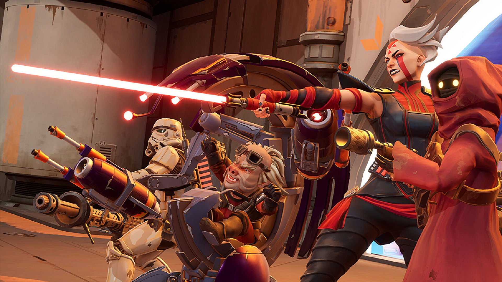
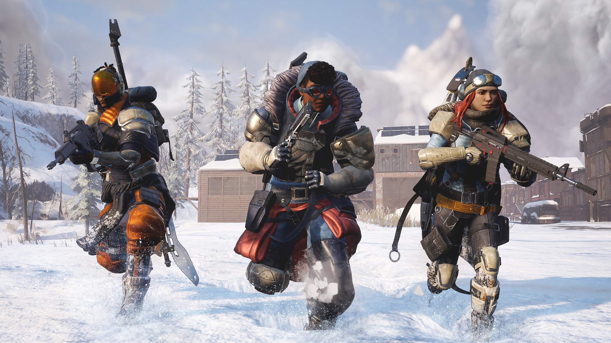
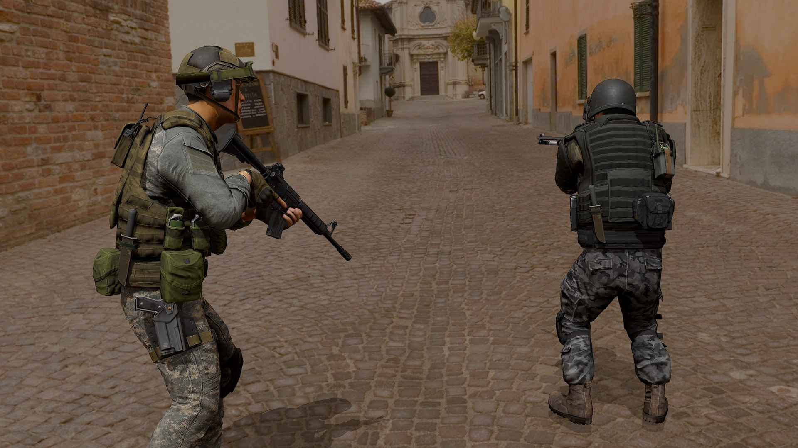
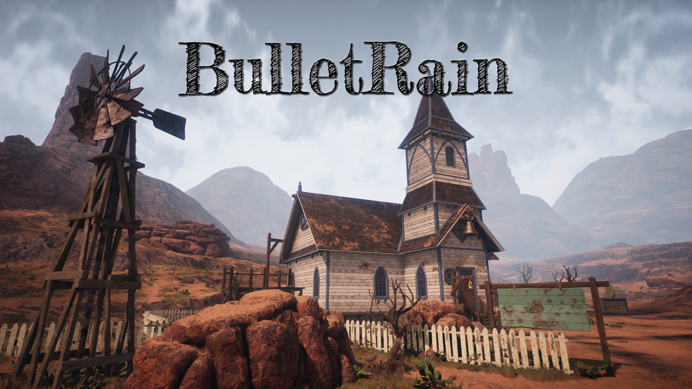
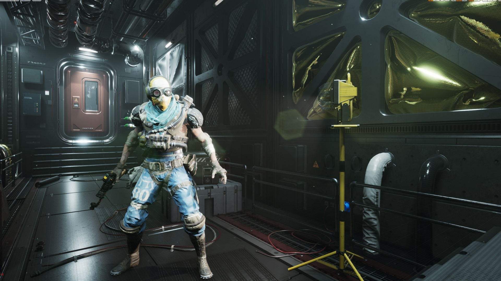
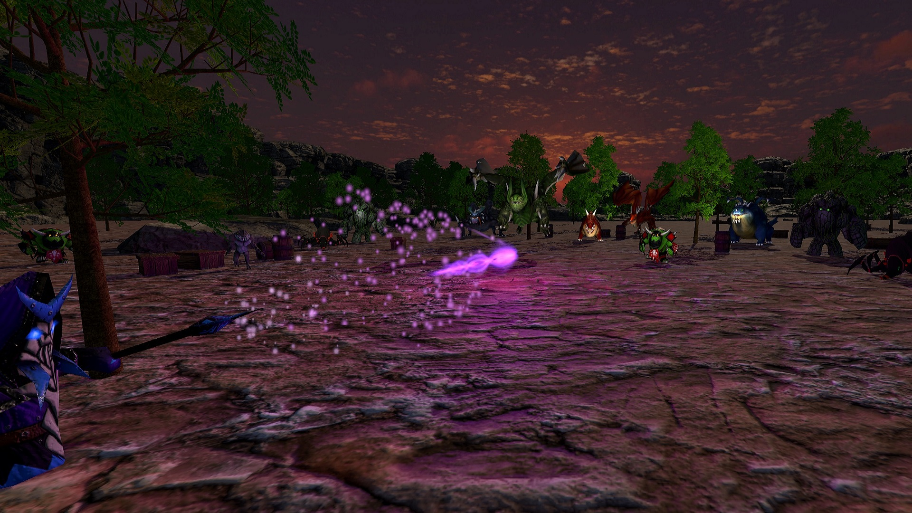
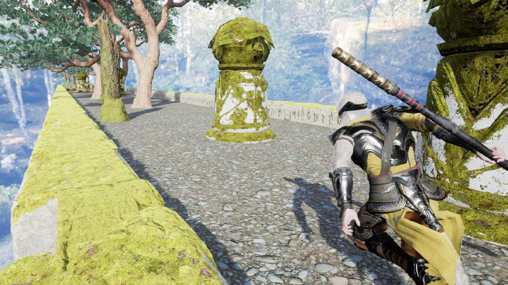
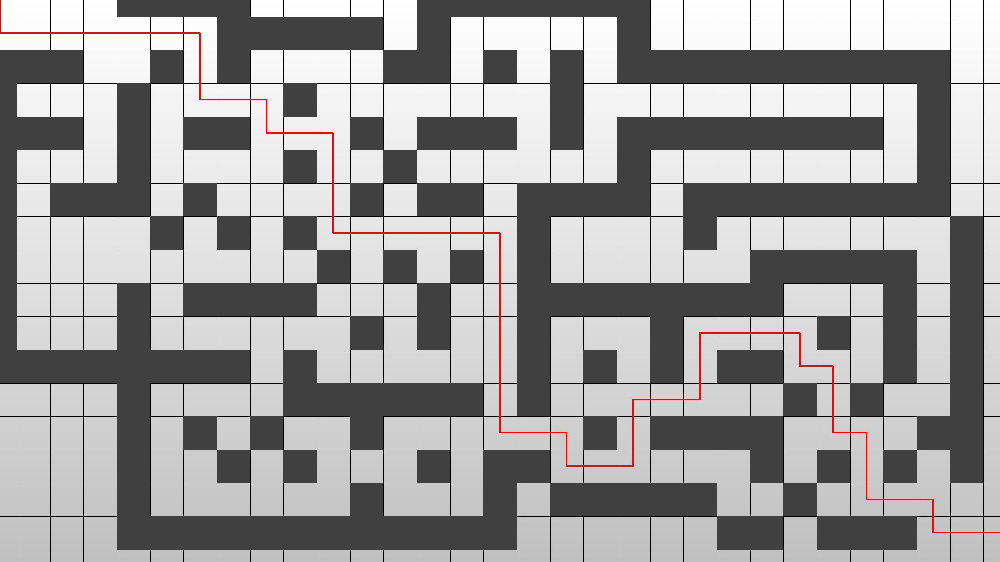

×

Work
As a Senior Game Programmer, I specialise in Unreal Engine/C++ but also have extensive experience with Unity/C#. I've developed games on PC, console and mobile. Here are some professional and personal projects I have worked on throughout the years. Click the images for more information. Enjoy!
Description: Star Wars: Hunters is a squad based areana shooter where players fight for domination
across a range of game modes, such as Team Death Match, Control and Huttball.
Key Contributions:Gameplay Ability System - Implemented a myriad of replicated Gameplay Abilities for player characters to use, and their associated Gameplay Effects to manage
different in game statuses and attrbutes. Oversaw the creation of Gameplay Cues and directed audio and visual teams on their correct useage.
Profiling & Optimisation - Measured performance across every target device to identfy areas that were exceeding the allocated budget.
Reduced instantiation and running costs of gameplay related actors and various UI elements in order to ensure a smooth gameplay experience.
Build Operations - Streamlined the build process in order to prevent unintended data leaking into packaged and distributed game files.
Training & Mentoring - Delivered engineering briefs and training to junior members of the team. Authored numerous technical documents
in order to enable greater knowledge sharing between other developers and external stakeholders.

Key Contributions:
Star Wars: Hunters
Description: Scavengers is a PvPvE Battle Royale game where players battle against other players, NPCs and the environment
in a desperate bid for survival. ScavLab is a large scale event space sandbox built on SpatialOS.
Key Contributions:Avatar Abilities - ......
UI - .......
Automated Testing - .......
Debugging - .......

Key Contributions:
Scavengers/ScavLab
Description: A protoype military simulator developed as part of Improbable's Defence Unit for training service personnel
in a wide range of non-combat scenarios.
Key Contributions:Distributed Interactive Simulation - ......
Something else - .......
One more thing - .......

Key Contributions:
Military Simulator
Description: First person action where the aim is to survive as long as
possible against the hordes of minions. Compete for the highest kill count.
Core Mechanics:Bullet Time - By stepping the time dilation up and down the player is able to
enter a slow motion state. This is bound to a timer that depletes when slow motion
is active and gradually regenerates when not in use.
Explosions! - When a grenade is thrown, a timer begins that calls it's
delegate function to handle the explosion. At detonation, all enemies within a
defined spherical radius are added to an array. This array is iterrated over to deal
damage to, and add a physics force in the direction of the enemy. Custom physics
rigs
were created to simulate ragdoll effects.
Dual-wielding - Operate both pistols independently. Enumerators were declared
to assign each weapon to a constant. A set of common functions were defined for
firing and reloading that accepted these enumerators as parameters, allowing for
seperate functionality.
External Ballistics - Projectiles are instantiated in the game world and act
as physics objects, travelling in a parabolic curve towards their intended target.
Collision events were programmed to handle damage, visuals and contextual sound
spawning. Custom
visual effects were added to produce bullet trails, imitating real life "swirl".

Core Mechanics:
Bullet Rain
Description: A cyberpunk/sci-fi themed shooter. An exploration of third
person combat
mechanics in Unreal Engine.
Core Mechanics:World Interaction - Through the use of raycasting, any object within a
certain range of the player's crosshair can be targetted. If the returned hit result
is a physics object, the player is able to interact with the attached physics handle
and move the object within the scene.
AI Behaviour - Behaviour trees were built to enable enemy searching,
patrolling and attacking routines. Services, tasks, decorators and selectors were
scripted in C++ to give the AI contoller access to certain player variables
such as their location.
Ranged Combat - Custom line tracing was employed to determine what players
can shoot through and what they have hit. If the object is an enemy character then a
custom function is called in order to deal damage. Firing weapons also instantiates
sound and visual effects.
Camera Effects - The zoom effect when aiming was acheived by employing a
timeline to return a float value at a given point along a curve. The camera then
interpolates between two field of view values depending on the returned float.
State Machines - By integrating Epic's Paragon assets from the marketplace,
animations and
blendspaces were able to be triggered depending on the character's state. Custom
events were used when syncing blended animations and managing combat behaviour.

Core Mechanics:
Cybershot
Description: Magic Ike is a top down action game.
Gameplay mechanics, particle effects and user interface were all built from the ground
up and
combined with models from the assest store.
Core Mechanics:Magic Projectiles - When the player attacks, a script decrements their mana
and spawn a projectile. If an enemy collider is hit, it calls to their stats
component to take damage. The projectile, impact and casting effects were all drawn
in photoshop and created using Unity's VFX graph.
Character Stats - This component manages the player and enemy stats, such as
health and mana. When damage is received or a character is killed it co-ordinates
the sending of necessary messages to handle the event.
Power-Ups - On enemy death a random number generator will determine if a
power-up is spawned, selecting randomly from an array of classes. Power-up behaviour
and active effects are governed by two over-arching classes, employing the use of a
dictionary to map collected power-ups to their remaining duration in seconds and
remove them when it reches zero.
Design Patterns - Software was designed with class hierarchy and
Object-Oriented patterns in mind, such as the Factory Pattern and Singleton Pattern
when deciding which power-ups to instantiate and providing a single global point of
access to manage their active
effects.

Core Mechanics:
Magic Ike
Description: An endless runner game. Dodge obstacles and rack up the
best high score you can. The further you go, the higher your score.
Core Mechanics:Procedural Generation - Terrain tiles were designed with references to an
array of transform variables and an array of obstacle classes. The construction
script selects from these arrays, randomly spawning variations of obstacles as the
terrain is
instantiated.
Trigger Volumes - Trigger
volumes were used to despawn terrain tiles off camera, as the player overlaps them.
As tiles are removed, new tiles are spawned at the front of the level.
Collision Detection - Colliding with
objects disables the player controller, initiates ragdoll physics and ends the run.
A timer is triggered to reload the level.
High Score Feature - The game mode class handles score incrementation as the
player progresses through the level. At certain thresholds the game logic will allow
more obstacles to be spawned and speed to be increased, making the game harder.

Core Mechanics:
The Eternal Jaunt
Description: Pathfinding program that finds the shortest possible path
between two points utilising the A* algorithm.
Core Mechanics:Path Tree - A hierarchical tree of known paths is stored along with their
cost. These are incrementally extended until the end node is reached and the path
with the least cost is chosen.
Priority Queue - At each iteration, the node with the lowest path cost is
removed from the open set and its neighbours are added, along with their updated
costs.
Manhattan Distance - The cost of each node is calculated by adding its path
cost from the start node to it's estimated cheapest distance from the end node. The
heuristic used to estimate this distance is Manhattan distance.

Core Mechanics:
Pathfinding Algorithm
Description: Web scraper used to assist in intelligence gathering.
Collates headlines from popular
news
websites and formats them into comma-separated values for use in spreadsheets.
Headline Scraper
Description: Experience cool visuals and fractal geometry while
exploring the Mandelbrot Set.
Mandelbrot Explorer
About Me
Royal Marines Commando turned software engineer.
During my time developing games I've worked on various titles across a large range of platforms, including an upcoming
Star Wars game. Though I've been invlolved in many areas of the development process, including engine, tools and AI, my specialisation lies
in networking and gameplay. I've gained a thorough knowledge of the Gameplay Ability System and the various networking methods used in
Unreal Engine, leveraging these capabilities to bring high quality games to a large audience.
Prior to that I spent nine years involved in military operations
across the globe, including the defence of UK nuclear assets, providing humanitarian aid during the
European migrant crisis and interdicting maritime drug smuggling vessels. I specialised as a
Communication Systems Engineer in order to facilitate 3 Commando Brigade's satellite capabilities.
Alongside a first-class honors degree in computing from The Open University, my professional experience and military background has
given me an excellent understanding of networking and programming concepts across a wide range of high tempo environments.